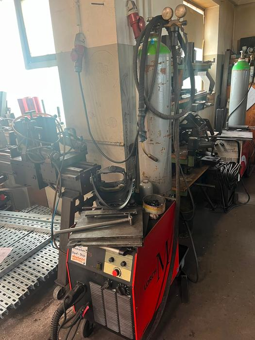
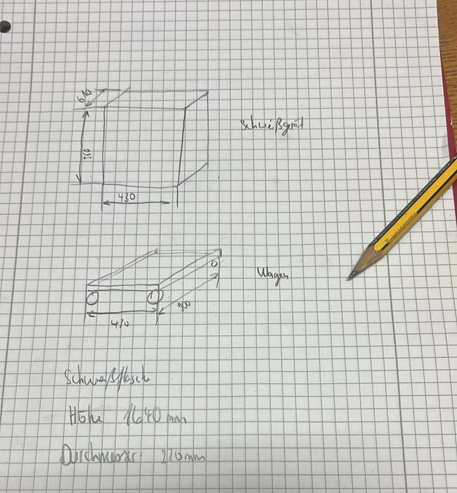
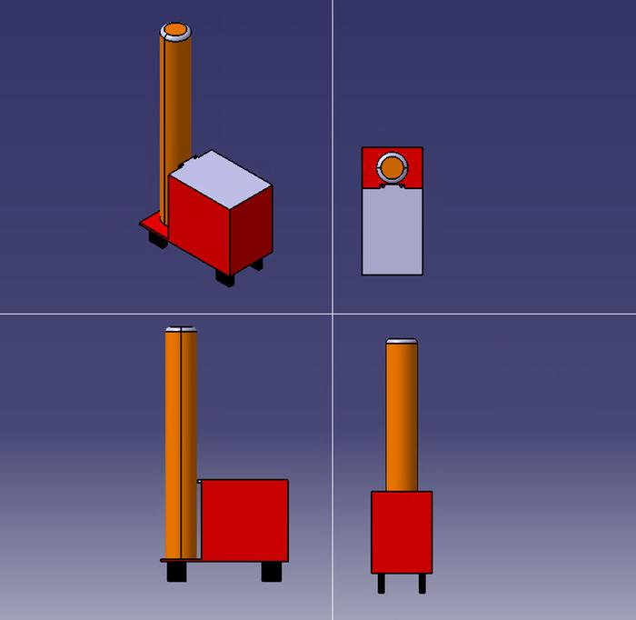

📷 Fotodokumentation
Abb. 1 · Der vorhandene Wagen im Betrieb

Einfaches Fahrgestell: Schweißgerät auf Plattform, Gasflasche senkrecht dahinter. Das Schlauchpaket liegt lose über der Flasche.
Abb. 2 · Seitenansicht

Keine definierte Ablage für das Schlauchpaket, keine Werkzeugaufnahme am Wagen.
🔍 Beobachtungen zum IST-Zustand
| Beobachtung | Beschreibung / Auswirkung |
|---|---|
| Aufbau | Einfaches Fahrgestell: Schweißgerät auf Plattform, Gasflasche senkrecht dahinter |
| Schlauchpaket | Lose über die Gasflasche gelegt – keine definierte Ablage, Stolper- und Beschädigungsrisiko |
| Werkzeugablage | Nicht vorhanden – Zubehör (Bürste, Hammer, Elektroden) muss separat mitgeführt werden |
| Flaschenanzahl | Nur eine Gasflasche – Gaswechsel erfordert Rüstzeit |
| Schwerpunkt | Flasche (ca. 1640 mm hoch) ragt weit über den Wagen – hoher Schwerpunkt, Kippneigung |
| Stellfläche | Sehr kompakt (ca. 410 × 300 mm) – gut für enge Werkstattgänge, aber kein Stauraum |
Hauptdefizite des IST-Zustands:
Keine 5S-Ordnung (kein fester Platz für Werkzeuge und Verbrauchsmaterial) ·
Kabel/Schlauch ungeordnet → Verschleiß und Unfallgefahr ·
nur ein Gerät + eine Flasche transportierbar ·
keine Nachbearbeitungswerkzeuge am Arbeitsplatz verfügbar.
📐 Aufmaß vor Ort
Abb. 3 · Handskizze mit gemessenen Maßen

Die Originalskizze aus der Werkstatt – Basis aller weiteren Bauraum-Entscheidungen.
| Bauteil | Maß | Wert |
|---|---|---|
| Schweißgerät | Länge / Tiefe | 610 mm |
| Höhe | 520 mm | |
| Breite | 430 mm | |
| Wagen (Plattform) | Breite | 410 mm |
| Tiefe | 300 mm | |
| Schweißflasche | Höhe | 1640 mm |
| Durchmesser | 220 mm | |
| Aufbauhöhe | Boden → Schweißgerät | 160 mm |
🧮 Ableitungen für die Neukonstruktion
- Mindest-Stellfläche je Gerät610 × 430 mm → Ablageebene muss ≥ 650 × 470 mm sein (mit Zugabe).
- Lichte Höhe je Geräteebene≥ 520 mm + Zugabe für Anschlüsse/Bedienung → ca. 600 mm.
- FlaschenaufnahmeØ 220 mm → Ausschnitt/Ring Ø ca. 240 mm; Sicherungskette in ca. 900–1100 mm Höhe.
- Flaschenhöhe 1640 mmbegrenzt die maximale Wagenhöhe – Gerät nicht über Flaschenoberkante stapeln.
- Aufbauhöhe 160 mmals Referenz für Bodenfreiheit + Rollenhöhe im neuen Entwurf.
- Bei 3 Geräten + 2 FlaschenGrundfläche der Neukonstruktion deutlich größer als 410 × 300 mm erforderlich.
💻 CAD-Vereinfachung des Bestandswagens
Abb. 4 · Vereinfachtes CAD-Modell

Isometrie, Draufsicht, Seiten- und Frontansicht – reduzierte Geometrie als Bauraum-Platzhalter.
| Element | Darstellung im Modell | Zweck |
|---|---|---|
| Roter Quader | Schweißgerät (610 × 430 × 520 mm) | Bauraum-Platzhalter |
| Oranger Zylinder | Gasflasche (Ø 220 × 1640 mm) | Höhen- und Kollisionsprüfung |
| Graue Platte | Grundplatte / Fahrgestell | Referenzebene |
| Schwarze Klötze | Rollen / Füße | Bodenfreiheit 160 mm |
Warum vereinfachen?
Reduzierte Geometrie = schnelle Rechenzeit bei Baugruppen-Untersuchungen; ausreichend für
Bauraum-, Kollisions- und Ergonomieprüfung; die Platzhalter lassen sich direkt in die
neuen Wagenkonzepte einsetzen.
🔗 Erste Verknüpfung mit den Konzeptentwürfen
| Anforderung aus IST-Analyse | Idee 1 (Kompaktrahmen) | Idee 2 (Werkstattwagen) |
|---|---|---|
| Ablagefläche ≥ 650 × 470 mm | ❌ zu schmal | ✅ 700 mm Breite passt |
| 2 Gasflaschen (Ø 220 mm) | ❌ nur 1 Platz | ✅ untere Ebene ausreichend |
| Definierte Schlauchablage | ⚠️ Lamellenwand | ✅ Einhängehaken oben |
| Werkzeugordnung (5S) | ⚠️ eingeschränkt | ✅ Lochblech, 3 Seiten |
| Standsicherheit bei 1640 mm Flasche | ❌ kippgefährdet | ✅ breite Basis |
Fazit: Die IST-Aufnahme bestätigt die Wahl von Idee 2 als Vorzugsvariante
– die realen Bauteilmaße passen in den Bauraum von Idee 2, nicht jedoch in Idee 1.